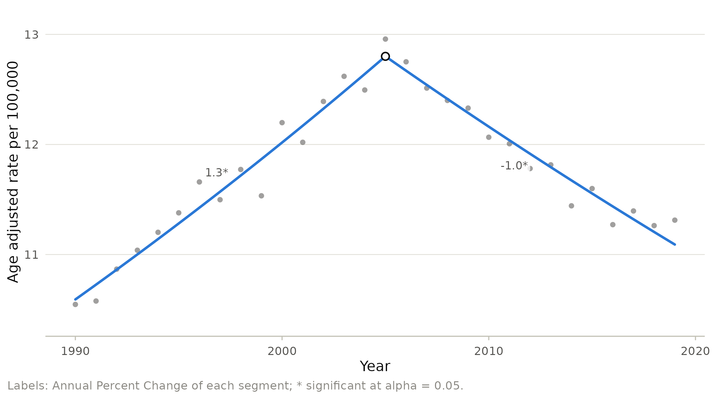
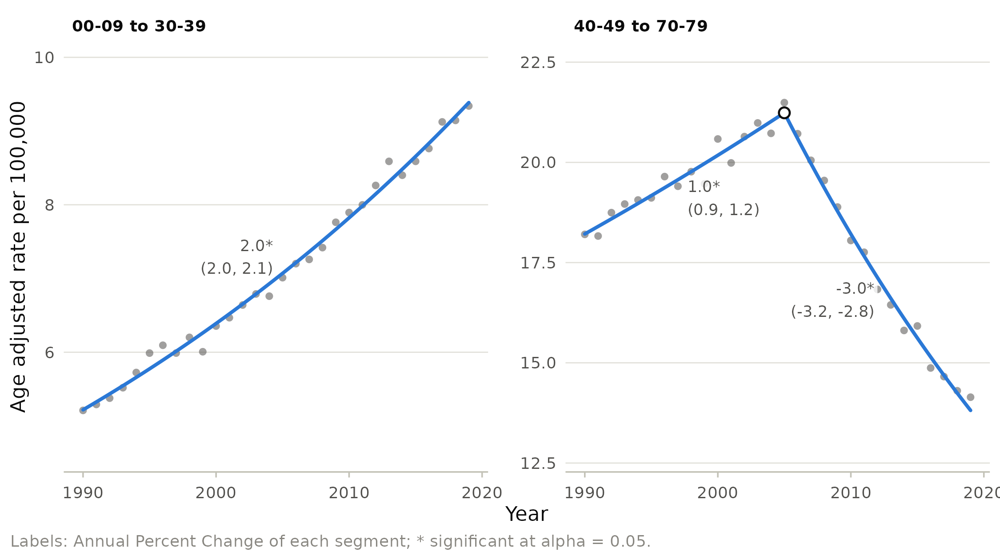

Which age groups share a trend? Age adjustment and clustering
Source:vignettes/clustering.Rmd
clustering.RmdAn age adjusted rate is a weighted average of age specific rates. When all age groups share a trend, the average describes each of them. When they do not, it can hide opposite movements: colorectal cancer incidence, for example, has been falling in older adults and rising in younger adults, and the age adjusted rate for all ages mostly reflects the older age groups, where rates are highest.
Analyzing every age group separately is the opposite extreme: many noisy series, many tests. Multi-group clustering finds the middle ground. It partitions contiguous age groups into clusters whose trends are as parallel as possible within a cluster and different between clusters, then fits one model to the age adjusted rate of each cluster.
A known truth
To see whether clustering finds the right answer, we simulate incidence counts for eight ten year age groups over 1990 to 2019. The four younger groups rise steadily by 2% per year; the four older groups rise by 1% per year until 2005 and fall by 3% per year afterwards.
library(joinpoint)
library(ggplot2)
set.seed(2026)
ages <- sprintf("%02d-%02d", seq(0, 70, 10), seq(9, 79, 10))
sim <- expand.grid(year = 1990:2019, age = ages, stringsAsFactors = FALSE)
older <- match(sim$age, ages) > 4
log_rate <- log(2) + 0.35 * match(sim$age, ages) +
ifelse(older, 0.01 * (sim$year - 1990) - 0.04 * pmax(sim$year - 2005, 0),
0.02 * (sim$year - 1990))
sim$population <- 1e7
sim$count <- rpois(nrow(sim), exp(log_rate) * 100)The age adjusted rate hides the divergence
age_adjust() computes directly standardized rates and
their standard errors. Here the 2000 United States standard population,
up to age 79, is collapsed into the same ten year groups.
us <- subset(std_populations, standard == "us2000")[1:17, ]
grp <- c(rep(ages[1], 3), rep(ages[-1], each = 2))
data.frame(us$age_group, grp)[c(1:4, 16:17), ]
#> us.age_group grp
#> 1 00 00-09
#> 2 01-04 00-09
#> 3 05-09 00-09
#> 4 10-14 10-19
#> 16 70-74 70-79
#> 17 75-79 70-79
std <- tapply(us$population, grp, sum)
aa <- age_adjust(sim, year, count, population, age, std)
fit_all <- joinpoint(aa, year, rate, se = se, kmax = 2,
ci_method = "parametric")
autoplot(fit_all) + labs(y = "Age adjusted rate per 100,000")
The all ages trend shows one turning point and a decline, the story of the older groups. The steady rise in younger people is invisible.
Clustering the age groups
jp_cluster() runs the whole algorithm: it compresses
sparse age groups, fits parallel joinpoint models to every block of
contiguous groups, finds the best partition for each number of clusters,
selects the number of clusters by BIC, and fits the final models to the
age adjusted rates of each cluster.
cl <- jp_cluster(sim, year, count, population, age, std, kmax = 2,
ci_method = "parametric")
cl$selection[, c("clusters", "Q", "bic", "selected", "partition")]
#> clusters Q bic selected
#> 1 1 4942.8517 3.2762547 FALSE
#> 2 2 228.7435 0.2488305 TRUE
#> 3 3 225.4961 0.2802038 FALSE
#> 4 4 219.7242 0.3912902 FALSE
#> 5 5 213.6924 0.4547986 FALSE
#> 6 6 210.4449 0.4851570 FALSE
#> 7 7 208.8807 0.5233680 FALSE
#> 8 8 208.3955 0.5667146 FALSE
#> partition
#> 1 00-09 to 70-79
#> 2 00-09 to 30-39 | 40-49 to 70-79
#> 3 00-09 | 10-19 to 30-39 | 40-49 to 70-79
#> 4 00-09 to 30-39 | 40-49 | 50-59 | 60-69 to 70-79
#> 5 00-09 to 30-39 | 40-49 | 50-59 | 60-69 | 70-79
#> 6 00-09 | 10-19 to 30-39 | 40-49 | 50-59 | 60-69 | 70-79
#> 7 00-09 | 10-19 to 20-29 | 30-39 | 40-49 | 50-59 | 60-69 | 70-79
#> 8 00-09 | 10-19 | 20-29 | 30-39 | 40-49 | 50-59 | 60-69 | 70-79
cl$clusters
#> cluster age_group
#> 1 00-09 to 30-39 00-09
#> 2 00-09 to 30-39 10-19
#> 3 00-09 to 30-39 20-29
#> 4 00-09 to 30-39 30-39
#> 5 40-49 to 70-79 40-49
#> 6 40-49 to 70-79 50-59
#> 7 40-49 to 70-79 60-69
#> 8 40-49 to 70-79 70-79The BIC selects two clusters, 0 to 39 and 40 to 79 years, which is the truth of the simulation. The final fits recover the two trends:

When the differences between neighboring clusters are too small to be
of interest, the clustering MADWD (madwd, in percentage
points) reduces the number of clusters until every pair of adjacent
clusters differs by at least that much on average.